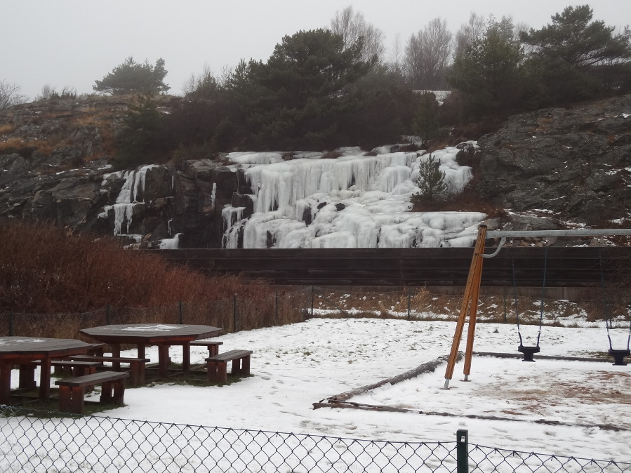
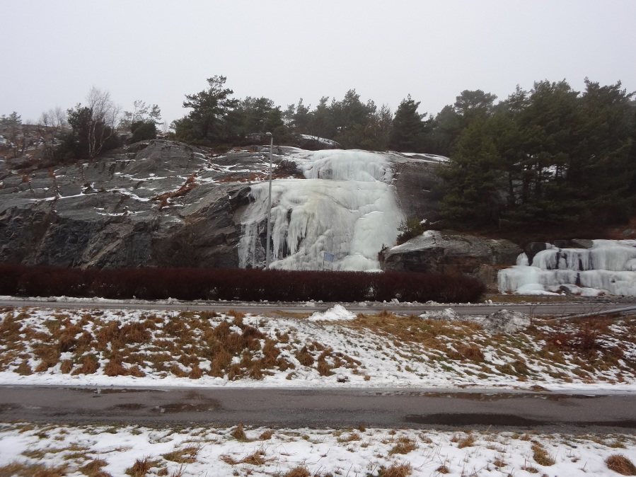
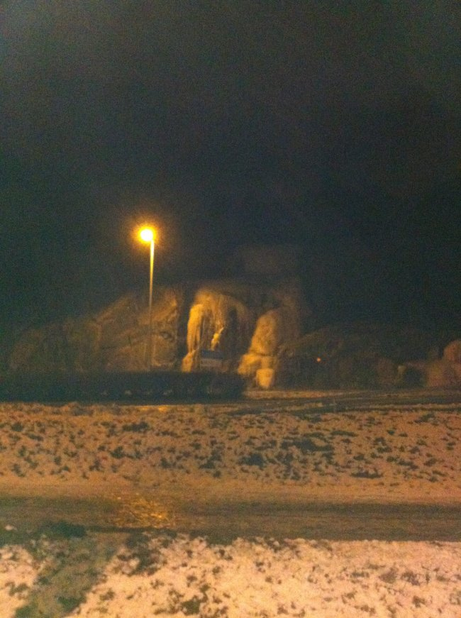
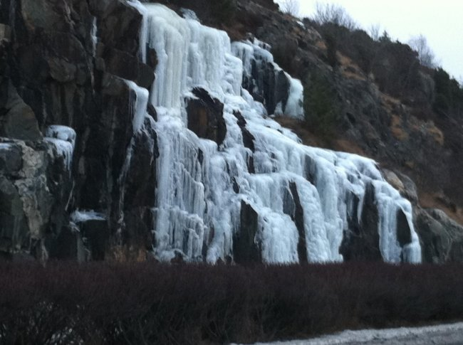

Vägbeskrivning:
Kör 155:an mot Öckerö, efter Maxi så dyker det upp 2-3 fall mot höger, cirka 7-8 meter höga. Ganska lätt klättring. Parkera på pendelparkering vid Hällsviksvägen, gångväg en minut. Ytterligare isfall brukar dyka upp ca 150 längre bort mot Öckerö.
   Copyright (C) Permission is granted to copy, distribute and/or modify this document under the terms of the GNU Free Documentation License, Version 1.3